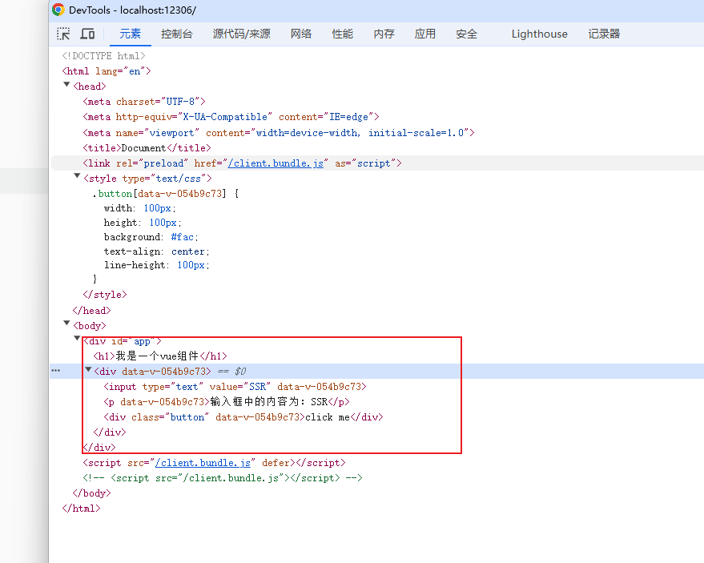
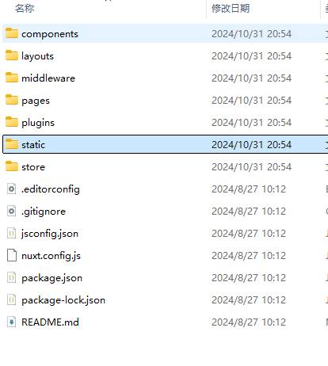

通过服务器渲染页面
客户端渲染缺点：
首屏加载慢 （落地页）
SEO 不好
服务器渲染缺点：
服务端要跑一次，客户端也要渲染
原理
利用 vue-server-renderer 包先在服务器端生成渲染后的 html 代码
服务端渲染要做的三件事：
创建 vue 实例
创建渲染器
利用渲染器将 vue 实例转化成 html 字符串
1.先搭建一个 vue 环境，入口需要特殊处理
注意：其中 main.js 需要服务器端和客户端共用
2.打包两套代码（服务器端使用和客户端使用）
3.启动一个 node 服务器
const express = require("express");
const server = express();
const fs = require("fs");
const { resolve } = require("path");
const { createBundleRenderer } = require("vue-server-renderer");
const serverBundle = require("../dist/vue-ssr-server-bundle.json");
const clientManifest = require("../dist/vue-ssr-client-manifest.json");
server.use(express.static(resolve("../dist"), { index: false }));
server.get("*", async (req, res) => {
try {
// 2. 创建渲染器
const render = createBundleRenderer(serverBundle, {
template: fs.readFileSync("./index.ssr.html", "utf-8"),
clientManifest,
});
const html = await render.renderToString();
res.send(html);
// 3. 利用渲染器将vue实例转化成html字符串
} catch (error) {
console.log(error);
res.status(500).send("服务器错误");
}
// res.send('hello');
});
server.listen(12306, () => console.log("server is run at 12306"));
真实的 html 页面

内部其实打包了两份代码以后 createBundleRenderer 渲染的是服务器打包出来的 html 页面，然而 css 和 js 还是靠客户端打包出来的 js 运行（只为了 seo 和渲染节约时间）
4.vue-router 的模式一定是 history
5.细节（router 传递 url 的值）
server index.js(运行服务器)
const express = require("express");
const server = express();
const fs = require("fs");
const { resolve } = require("path");
const { createBundleRenderer } = require("vue-server-renderer");
const serverBundle = require("../dist/vue-ssr-server-bundle.json");
const clientManifest = require("../dist/vue-ssr-client-manifest.json");
server.use(express.static(resolve("../dist"), { index: false }));
server.get("*", async (req, res) => {
// /demo, req.url /demo
try {
const url = req.url;
// 2. 创建渲染器
const render = createBundleRenderer(serverBundle, {
template: fs.readFileSync("./index.ssr.html", "utf-8"),
clientManifest,
});
const html = await render.renderToString({ url }); //这里可以传参数
res.send(html);
// 3. 利用渲染器将vue实例转化成html字符串
} catch (error) {
console.log(error);
if (error.code == 404) {
res.status(404).send("页面去火星了，找不到了，404啦");
return;
}
res.status(500).send("服务器错误");
}
// res.send('hello');
});
server.listen(12306, () => console.log("server is run at 12306"));
server.entry.js（打包的服务器端）
import createApp from "../main.js";
export default function (ctx) {
return new Promise((resolve, reject) => {
const { app, router, store } = createApp();
router.push(ctx.url);
router.onReady(() => {
// 判断当前路由下是否存在组件
const matchedComponents = router.getMatchedComponents();
if (matchedComponents.length == 0) {
return reject({ code: 404 });
}
Promise.all(
matchedComponents.map((c) => {
if (c.asyncData) {
return c.asyncData(store);
}
})
)
.then(() => {
// window.__INITIAL_STATE__
ctx.state = store.state;
resolve(app);
})
.catch(reject);
// resolve(app);
}, reject);
});
}
6.store 数据预取
在页面加载之前，登录信息等数据想要同步获取到而不是闪烁（提前将异步数据跟着页面过来）
<template>
<div>
<h1>我是Home页面</h1>
<div>欢迎，{{ name }}</div>
</div>
</template>
<script>
import { mapState } from 'vuex';
export default {
computed: {
...mapState(['name']),
},
created() {
this.$store.dispatch('getName');
},
//可以在vue中编写一个方法
asyncData(store) {
return store.dispatch('getName');
}
}
</script>
<style>
</style>
server.entry.js
调用方法
保存结果
import createApp from "../main.js";
export default function (ctx) {
return new Promise((resolve, reject) => {
const { app, router, store } = createApp();
router.push(ctx.url);
router.onReady(() => {
// 判断当前路由下是否存在组件
const matchedComponents = router.getMatchedComponents();
if (matchedComponents.length == 0) {
return reject({ code: 404 });
}
Promise.all(
matchedComponents.map((c) => {
//这边判断如果有这个方法的话就直接调用
if (c.asyncData) {
return c.asyncData(store);
}
})
)
.then(() => {
// 会将结果保存到这里面
//服务端保存最新的state仓库数据
// window.__INITIAL_STATE__
ctx.state = store.state;
resolve(app);
})
.catch(reject);
// resolve(app);
}, reject);
});
}
vue-cli 改成 ssr
1.将 vue-router vuex main.js 都变成函数
import Vue from "vue";
import App from "./app.vue";
import createRouter from "./router";
import createStore from "./store";
export default function () {
const router = createRouter();
const store = createStore();
const app = new Vue({
render: (h) => h(App),
router,
store,
});
return { app, router, store };
}
2.编写 server 文件夹(最终运行的服务器)
3.编写 entry 文件夹（里面分成服务器端渲染和客户端渲染两部分）
4.编写 vue.config.js
const VueSSRClientPlugin = require("vue-server-renderer/client-plugin");
const VueSSRServerPlugin = require("vue-server-renderer/server-plugin");
const TARGET_NODE = process.env.WEBPACK_TARGET === "node";
const target = TARGET_NODE ? "server" : "client";
module.exports = {
configureWebpack: () => ({
entry: {
app: `./src/entry/${target}.entry.js`,
},
target: TARGET_NODE ? "node" : "web",
output: {
libraryTarget: TARGET_NODE ? "commonjs2" : undefined,
},
plugins: [
TARGET_NODE ? new VueSSRServerPlugin() : new VueSSRClientPlugin(),
],
}),
chainWebpack: (config) => {
config.optimization.splitChunks(undefined);
},
};
5.编写脚本命令
"scripts": {
"serve": "vue-cli-service serve",
"build": "vue-cli-service build",
"lint": "vue-cli-service lint",
"build:client": "vue-cli-service build",
"build:server": "cross-env WEBPACK_TARGET=node vue-cli-service build --mode server",
"build:all": "npm run build:server && move dist\\vue-ssr-server-bundle.json bundle && npm run build:client && move bundle dist\\vue-ssr-server-bundle.json"
},
nuxt.js
vue ssr 的脚手架
翻盖上面自己搭的脚手架，还多很多东西（router,vuex 都已经集合进去了）
api
路由
<nuxt-link to="/">首页</nuxt-link>
layouts 模板
<div id="components-layout-demo-basic">
<a-layout>
<a-layout-header>Header</a-layout-header>
<a-layout-content>
<nuxt />
</a-layout-content>
<a-layout-footer>Footer</a-layout-footer>
</a-layout>
</div>
nuxt 的基本目录

components：组件，可以直接使用
layouts:模板，每个页面可以使用不一样的模板
middleware:中间件,用于打开页面的服务器前置条件
pages：每一个页面对应一个路由
static:静态文件(图标)
store:全局可用的数据(vuex)
plugins:第三方插件在这里(axios,element-plus)
nuxt.config.js：基本所有的配置放在这里
_开头是一个动态路由 nuxt 框架